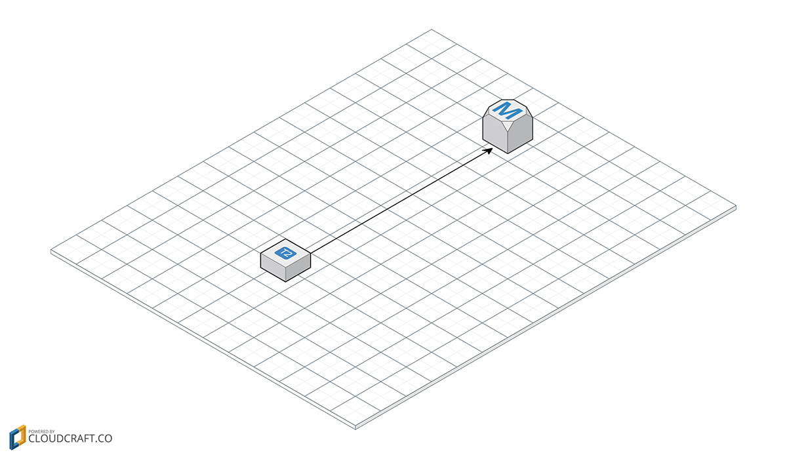

Scaling WordPress on Amazon Web Services
Follow Along
v.gd/wpawsWhat This Talk Will Cover
- Theory & Concepts
- Planning
- Step-by-step Example
- Deployment
- Pricing
- Q&A
About Me
I’ve been playing with WordPress since 2007

Lead Developer at
When I’m not coding…
A Familiar Story…

We lasted 15 minutes…
How can we build a website that scales?
What is Scaling?
Scal•a•bil•ity—the capability of a system, network, or process to handle a growing amount of work
Horizontal Scaling
Vertical Scaling
- Bigger Servers
- Adding a CDN
- Redis/Memcache
Pets vs. Cattle
Pets
- Cutesy Names like Brutus, Penelope, Jenny
- Unique, loving, cared for
- When ill, you fix them

Cattle
- Algorithmic names like ec18453ba, h65106z, 8675309
- Nearly identical to other cattle
- When ill, you replace them
Pets don't scale!
What is high availability?
Websites have many components
Achieving High Availability
- Redundancy to reduce single points of failure
- Graceful failover
- Monitoring/alerts + automation
| Nines | Availability | Downtime per Year |
|---|---|---|
| 1 | 90% | 36.5 days |
| 2 | 99% | 3.65 days |
| 3 | 99.9% | 8.76 hours |
| 4 | 99.99% | 52.56 minutes |
| 5 | 99.999% | 5.26 minutes |
| 6 | 99.9999% | 31.5 seconds |
| 7 | 99.99999% | 3.15 seconds |
| 8 | 99.999999% | 315.569 milliseconds |
| 9 | 99.9999999% | 31.5569 milliseconds |
Planning
Do Your Homework!
- What isn't working on your current host?
- What is working?
- What are the specs of your current host?
- CPU and RAM usage?
Traffic Analysis
- What was your busiest hour via Google Analytics?
- Figure out how many requests per second that was
- What type of page was that peak? Homepage? Article?
- Bandwidth reports from current host?
Yearly Traffic Spikes
Pageviews by hour

13,322 pageviews per hour
÷ 60 minutes
÷ 60 seconds
= 3.70 pageviews per second

58 requests per pageview
x 3.70 pageviews per second
= 214.6 requests per second

What is Amazon Web Services?
Range of cloud services charged based on usage with no upfront costs.
Let's Build a Website Infrastructure from Scratch!
Pick a Region
Regions & Availability Zones
Regions are separate geographic area
Regions have multiple, isolated availability zones

Add a Server
Elastic Compute Cloud (EC2)
Amazon Virtual Servers
Launch a machine to connect to and install software on
What size server?
- Stick with the T2 general purpose instances
- Start small (t2.micro) and upgrade as needed
Add a Database
Relational Database Service (RDS)
Amazon SQL
Managed MySQL database
Add a Redis Caching Layer
Elasticache
Amazon Redis
Managed Redis/Memcached service
Add a 2nd Server
Add a Load Balancer
Add an S3 Bucket
Simple Storage Service (S3)
Amazon Unlimited FTP Server
Upload and serve static files from
SSL and S3 Buckets
- Bucket names should be DNS compliant
- Lower-case letters, numbers, hyphens
BAD: example.com
GOOD: example-com
Autoscaling and Availability Zones
Autoscaling and Availability Zones
Autoscaling and Availability Zones
Add a CDN
Amazon CloudFront
Amazon CDN
KeyCDN ($0.04/GB) vs CloudFront ($0.08/GB)
Software
Pick an Amazon Machine Image (AMI)
Ubuntu Server 14.04 LTS (HVM), SSD Volume Type (64-bit)
Configuring a Server
Use EasyEngine.io
wget -qO ee rt.cx/ee && sudo bash eesudo ee site create example.com \
--wpsubdomain \
--wpredis \
--php7 \
--user=admin \
--pass=admin* Requires Ubuntu or Debian OS
EasyEngine will install the following components + dependencies
- nginx
- PHP 7
- WordPress Multisite with Subdomains
- Full page caching using Redis
s3cmd
- s3tools.org/s3cmd
- Useful for syncing files to S3
sudo pip install s3cmd
Create an AMI of your Server
Use this image to launch new instances
WordPress Plugins
nginx Helper
- Purges Redis cache based on WordPress events
- Installed automatically by EasyEngine
WP Redis
- Tells WordPress to use Redis for object caching
- After installation, copy
object-cache.phpto/wp-content/ - Add Redis configuration to
wp-config.php$redis_server = array( 'host' => 'redis-xxxxxxxxxx.amazonaws.com', 'port' => 6379, );
WP Offload S3 Lite
- Syncs uploaded media to S3
- Rewrites uploaded media URLs to be served by S3 or a CDN
Load Testing
Apache Benchmarking (ab)
- Free
- Downloadable tool
- Run on your own computer
loader.io
- Free Plan
- 10,000 clients / test
- In the cloud
Amazon Cloudwatch
Deployment
Because sometimes you need to change things
Pricing
~$220 per Month

Reserved Instances
- Billing concept
- Reduced hourly rate
- Commitment to reserve resources
Free Tier
- Discounted services for 12 months after signing up
- Get a basic site up and running
Other Resources
Wrapping up!
- AWS offers a lot of flexability…
- …at the cost of complexity
- Maybe cheaper?
- A valuable skill to have